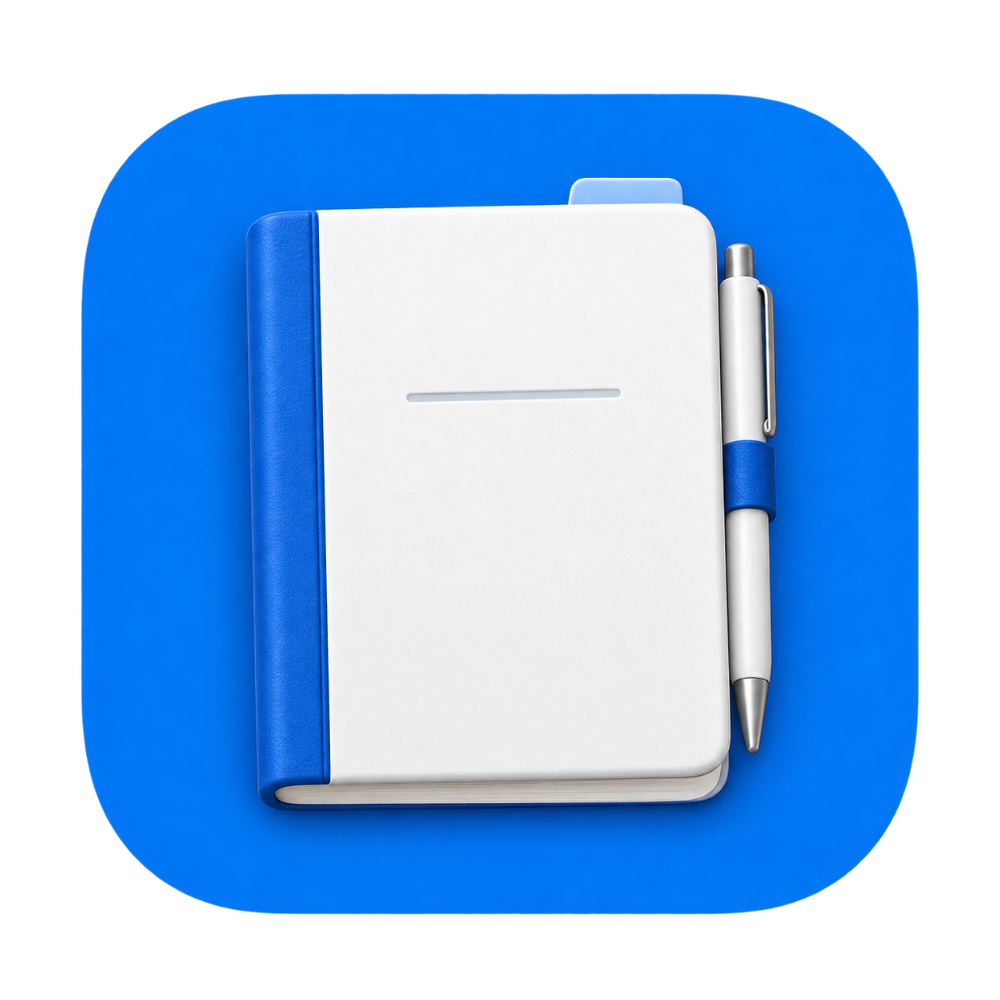

◇ 나의 노트⌘ 프로젝트 이슈◈ 작업의 기록
↓
선택한 자료만필요한 것만 연결하세요.
사용할 볼트와 프로젝트 범위를 직접 고릅니다. 연결한 원본은 읽기 전용으로 다룹니다.
매번 처음부터 설명하지 않도록.
흩어진 자료와 결정의 이유를, AI 비서의 기억으로 연결하세요.
내 컴퓨터에 저장 · 근거가 남는 기억 · macOS 우선 개발 중
노트의 생각부터, 이슈 속 결정까지.
지난주 노트에 적은 방향, 이슈에서 정한 예외, 그리고 그 결정을 내린 이유. 필요한 맥락은 늘 여러 곳에 흩어져 있습니다.
Aidebook은 그 조각들을 근거와 함께 연결합니다. AI 비서가 다음 일을 시작할 때, 다시 설명할 맥락을 꺼내 쓸 수 있도록.
연결하고, 확인하고, 이어가세요.
사용할 볼트와 프로젝트 범위를 직접 고릅니다. 연결한 원본은 읽기 전용으로 다룹니다.
무엇을, 왜 기억하는지 근거를 살펴보세요. 제안된 기억은 사용자의 검토를 거쳐 남습니다.
검색과 CLI·MCP로 기억과 관련 자료를 함께 조회합니다. 결론뿐 아니라 출처까지 이어집니다.
어디에 보관되는지, 무엇을 읽는지,
어떤 기억을 남길지 알 수 있어야 합니다.
기억과 수집한 자료의 스냅샷은 로컬에 보관합니다. 외부 서비스 자료를 새로 읽을 때는 네트워크를 사용합니다.
연결한 노트와 이슈를 읽고, 메모는 Aidebook 안에 남깁니다. 소중한 원본에 자동으로 덮어쓰지 않습니다.
기억의 근거와 변경 이력을 확인하고, Markdown으로 내보낼 수 있습니다. 남길 기억은 내가 결정합니다.
아니요. Aidebook은 기존 도구에 있는 자료를 읽고, AI 비서가 사용할 기억과 근거를 별도로 보관합니다. 현재 Obsidian, GitHub, Jira 연결을 개발하고 있습니다.
제안된 기억은 검토 대기 상태로 남습니다. 사용자가 앱에서 승인해야 정식 기억으로 저장되며, 외부 에이전트의 일반 MCP 도구에는 승인 기능을 제공하지 않습니다.
Aidebook은 macOS 우선으로 개발 중입니다. 아직 서명·공증된 공개 배포판은 준비되지 않았습니다. 이 페이지에서는 예시 데이터로 제품의 핵심 흐름을 살펴볼 수 있습니다.
아니요. 홈페이지 데모는 고정된 예시 데이터만 사용하며, 계정 연결이나 실제 AI 호출을 수행하지 않습니다.

LESS REPEATING. MORE CONTINUING.차근차근 만들고 있습니다. macOS 우선 개발 중.